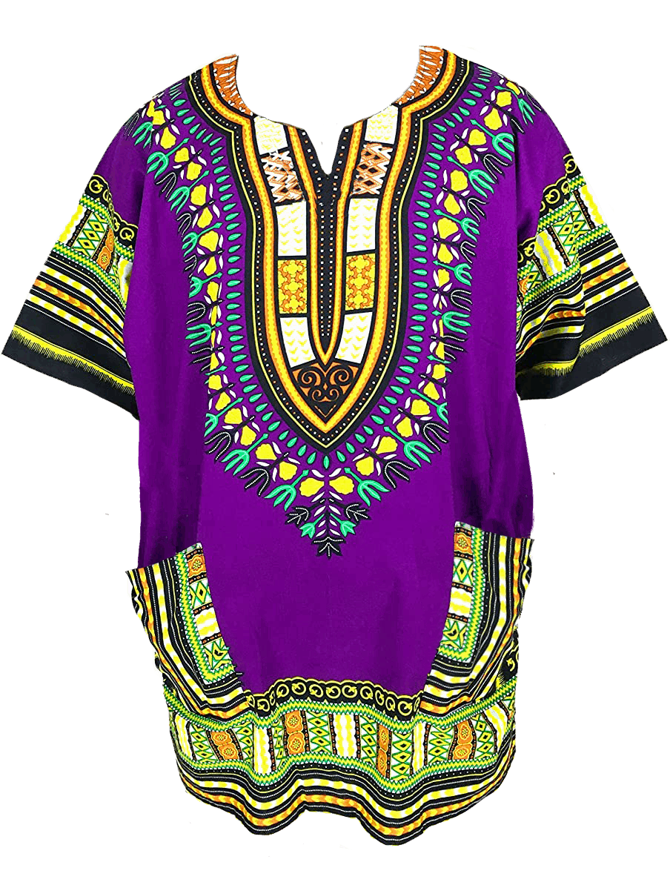
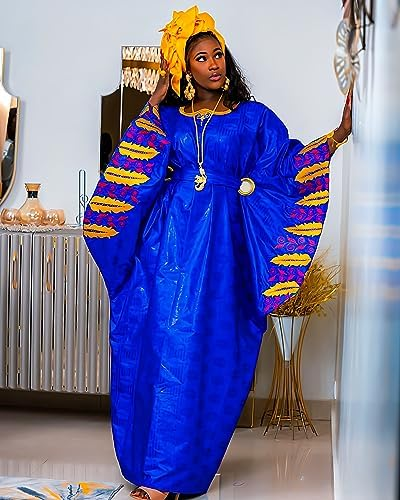
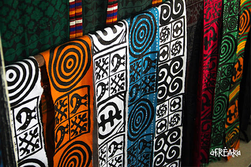

O Vestuário Tradicional Africano
O vestuário africano é extremamente diverso e representa a rica cultura, história e tradições de cada região do continente africano. A vestimenta pode variar de acordo com a etnia, o clima, a religião e os costumes locais. O vestuário tradicional tem grande significado simbólico e cultural, sendo usado em diferentes ocasiões, como cerimônias, festivais, casamentos e rituais religiosos.
Trajes Típicos
Na África, as roupas são frequentemente feitas de tecidos naturais, como algodão, lã, seda e pele de animais. Esses materiais são escolhidos de acordo com o clima e a disponibilidade de recursos. Cada etnia tem um estilo específico, com estampas e padrões que representam a identidade de cada grupo.
Dashiki
O Dashiki é uma peça tradicional de vestuário muito popular em várias regiões da África Ocidental. Ele é uma túnica solta, geralmente feita de algodão, e é usada tanto por homens quanto por mulheres. O Dashiki é conhecido por suas cores vibrantes e padrões geométricos, e pode ser acompanhado por calças ou saias. Tradicionalmente, é utilizado em ocasiões festivas, celebrações e rituais.
Shúkà
O Shúkà é um traje tradicional usado pelos Maasai e outros grupos da África Oriental, como no Quênia e na Tanzânia. Consiste em um manto de tecido grosso, geralmente em cores vermelhas e com padrões característicos, que é enrolado ao redor do corpo. O Shúkà simboliza a identidade e o pertencimento ao grupo Maasai e é frequentemente usado durante rituais e cerimônias. Além de sua importância cultural, o Shúkà é uma vestimenta prática que oferece proteção contra o calor e contra os animais selvagens, sendo um traje adaptado ao ambiente da savana africana.

Boubou
O Boubou é um traje tradicional largamente usado em países da África Ocidental, como Senegal, Mali e Guiné. Ele é uma túnica longa e solta, que cobre o corpo até os pés, frequentemente feita de tecidos brilhantes e ornamentados. Este vestuário é comumente usado por homens e mulheres para ocasiões especiais, como casamentos, festas e cerimônias religiosas. O Boubou é conhecido por sua elegância e sofisticação.
Adinkra
O Adinkra é um tipo de tecido tradicional usado principalmente por grupos da África Ocidental, como os Akan, na atual Gana. O tecido é tingido com símbolos geométricos e espirituais conhecidos como "símbolos Adinkra". Cada símbolo tem um significado específico relacionado à sabedoria, à história, à moral e às filosofias africanas. Os tecidos Adinkra são comumente usados em vestuário durante cerimônias e celebrações importantes.
O Papel do Vestuário na Cultura Africana
O vestuário tradicional africano tem um significado muito além de sua função de proteger o corpo. Ele é uma maneira de expressar a identidade cultural, a classe social, o status e até mesmo o estado civil. Em muitas culturas africanas, as cores e os padrões das roupas têm significados profundos. Por exemplo, roupas de cores como branco, vermelho e dourado são frequentemente associadas a ocasiões de importância religiosa e espiritual.
Além disso, os acessórios, como joias e adornos, também são de grande importância. Colares, pulseiras, brincos e diademas são usados para complementar o vestuário e muitas vezes indicam status ou pertencimento a um grupo específico. As joias também têm valor simbólico, sendo usadas como proteção espiritual ou como herança familiar.
Vestuário e Influências Coloniais
Com a chegada dos colonizadores europeus na África, houve uma grande transformação nas tradições de vestuário. Os colonizadores impuseram suas roupas ocidentais, o que fez com que, em algumas regiões da África, as vestimentas tradicionais fossem substituídas por trajes europeus. No entanto, muitos africanos continuaram a usar suas roupas tradicionais, muitas vezes combinando elementos do vestuário ocidental com o africano. Hoje em dia, as roupas tradicionais africanas convivem com a moda ocidental, e muitos africanos usam ambos os estilos dependendo da ocasião.
Hoje, o vestuário tradicional africano tem sido cada vez mais valorizado, especialmente em eventos de celebração da cultura africana, como o **Dia da Independência**, casamentos e festivais. Além disso, a moda africana tem ganhado popularidade internacional, com designers africanos criando roupas que misturam o tradicional com o contemporâneo.
Vestuário e Identidade Negra
O vestuário africano também desempenha um papel importante na afirmação da identidade negra, especialmente fora da África, em países com grandes comunidades afrodescendentes. Muitos negros em diáspora, especialmente em eventos como o **Dia da Consciência Negra**, optam por usar roupas e acessórios tradicionais africanos como uma forma de celebrar e reforçar sua herança cultural e ancestralidade.
Conclusão
O vestuário africano é uma expressão rica e vibrante da diversidade cultural do continente. Ao longo dos séculos, ele tem sido usado não apenas como uma forma de proteção contra as intempéries, mas como uma ferramenta de resistência, expressão e identidade. Cada peça de vestuário conta uma história, e por meio das roupas, podemos aprender sobre os valores, crenças e tradições dos diversos povos africanos. A moda africana continua a inspirar e influenciar a indústria da moda global, demonstrando sua atemporalidade e importância cultural.
Proxima Página